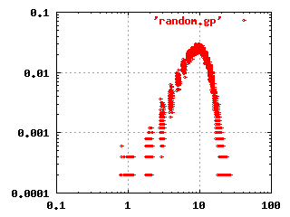
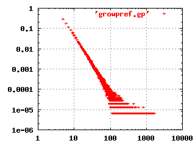

Lecture 30 Nov 2001, Per Kraulis
Metabolic and signalling networks are complex: There are many nodes (proteins, particles, molecules) and many connections (interactions). This is obvious from nearly any illustration of a network. And even if one can define sub-networks that can be meaningfully described in relative isolation (such as the citric acid cycle, or the ras p21 signalling network), there are always connections from it to other networks.
The overall structure of a network can be described by several different parameters. For example, the average number of connections a node has in a network, or the probability that a node has a given number of connections. Theoretical work has shown that different models for how a network has been created will give different values for these parameters.
One can also plot the relative frequency of each node as a function of the number of connections of the nodes. Both axes in the plot uses logarithmic scales. Using data from real networks or from simulations of different types of randomized networks, one obtains log-log plots that turn out to have characterisic shapes depending on how the properties of the networks and how they were generated. Examples are shown in the figures below.
 The classical random network theory by Erdös and Renyi (1960) states that given a set of nodes, the connections are made randomly between the nodes. This gives a network where most nodes have the same number of connections. The log-log frequency plot for this kind of network is shown to the left.
Recent research has shown that this model does not fit the structure found in several important networks, such as the Internet, World-Wide Web, power grids, or social networks. Instead, these complex networks are better described by a so-called scale-free, hierarchical model where most nodes have only a few connections, but a few nodes (called hubs) have a very large number of connections.
Recent work by Jeong, Barabasi et al (Nature (2000) 407, 651-654), indicate that metabolic networks are examples of such scale-free networks. This result is important, and will probably lead to new insights into the function of metabolic and signalling networks, and into the evolutionary history of the networks.
 The image to the left shows the characteristic shape of a scale-free, hierarchical network in a log-log plot. This particular plot was produced by simulating a growing network, where each new node is connected randomly to existing nodes, but with a higher preference for already highly connected nodes.
Robustness is another important property of metabolic and signalling networks. This is the ability of the network to produce essentially the same behaviour even when the various parameters controlling its components vary within considerable ranges. For instance, recent work (von Dassow et al, Nature (2000) 406, 188-192) indicates the segment polarity network in the Drosophila embryo can function satisfactorily with a surprisingly large number of randomly chosen parameter sets. The parameters do not have to be carefully tuned or optimized. This makes biological sense: A signalling system should be tolerant with respect to mutations or large environmental changes.
One important aspect of metabolic and signalling networks is that they are strongly conserved in evolution. Generally, the same roles in the metabolic networks in different organisms are performed by homologous enzymes, with the same kind of regulatory mechanisms. Of course, there are cases where a non-homologous protein is involved in one organism compared to the norm in others. There are also also cases where an entire section of a network is missing in an organism.